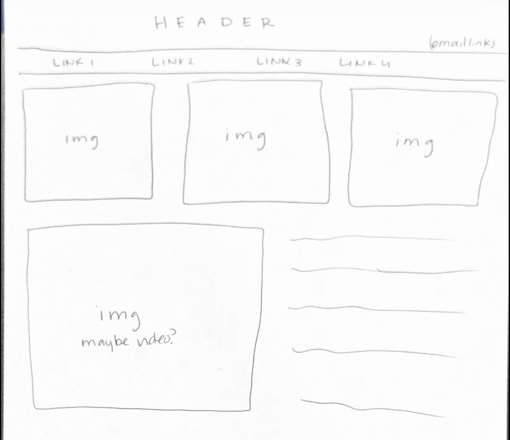

My landing page definitely does not reflect what the sketch shows.. I wasn't sure I was ready to approach that yet. So when answering the reflection, I'll refer to the sketch. I believe the visitor would encounter the content first. See the header and navigation next. I'm hoping to incorporate the images within the content to work with the navigation to somewhat help the user move within the webpage or encourage them to do so. The information I believe belongs on an entry page is a rough summary of what the webpage as a whole is about. However, just a summary, you wouldn't want it to be too repetitive for the user. I, personally, woukd want the user to be able to move through navigation and through the content through images that have embeded links. I would like to think that all the pages are equally as important because they work as a whole. But I believe we will all have our favorites.. For the landing page right now I put random links, but the labels for my actual pages would need to reflect the content that the links are leading the user to. So hierarchy, about, checkpoint, etc. When a site grows from a couple pages to decent amount, it gets way more complex. There's a really important stress to stay organized and focus to stick to the sitemap. For me, the consistency should be the header and the top navigation. I'm not sure if that's because that's how I grew up seeing websites, but I feel like that's an easy way to stay consistent with the user and also allowing you to be creative with the content on the screen. Which is why I feel like the content from page to page can be different. Maybe not super drastically, depending on what you're going for what we're doing now different is okay.
Letterboxd Email Spotify